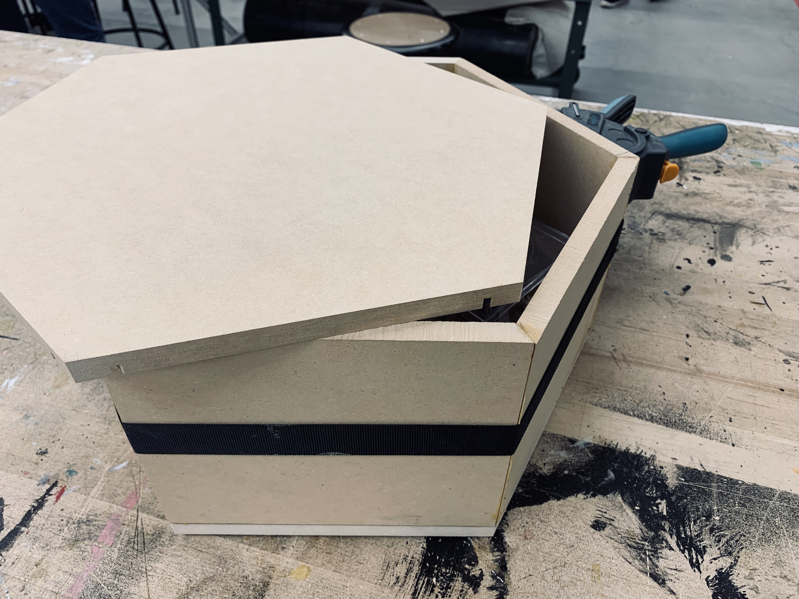
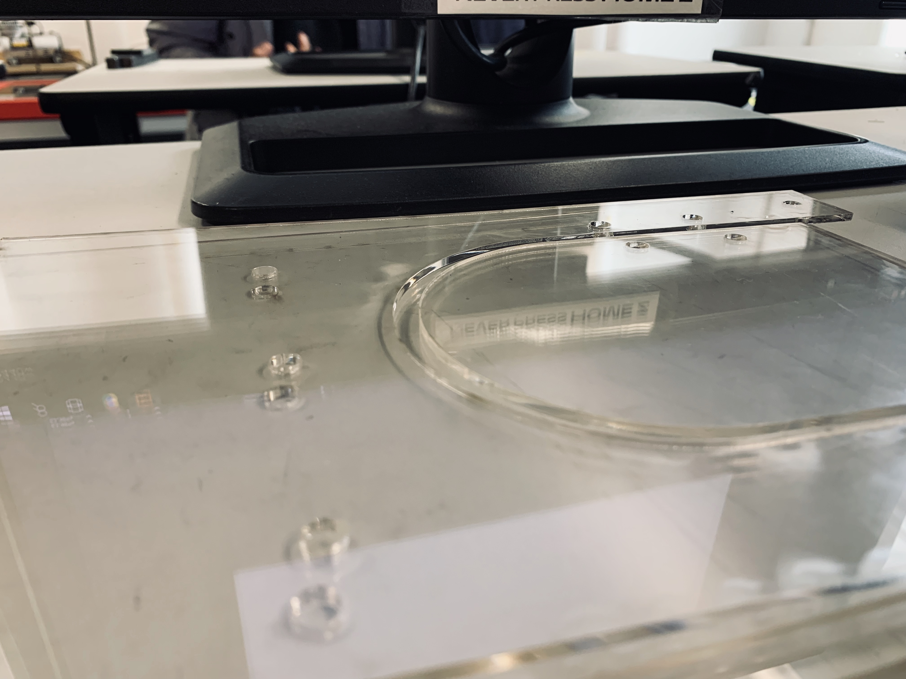
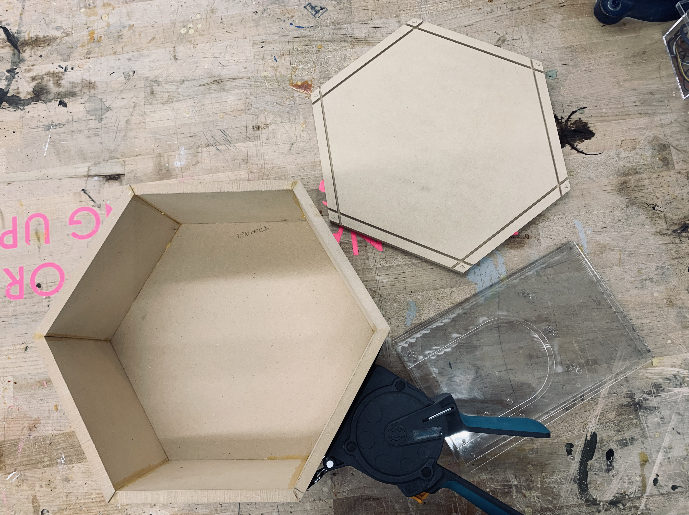
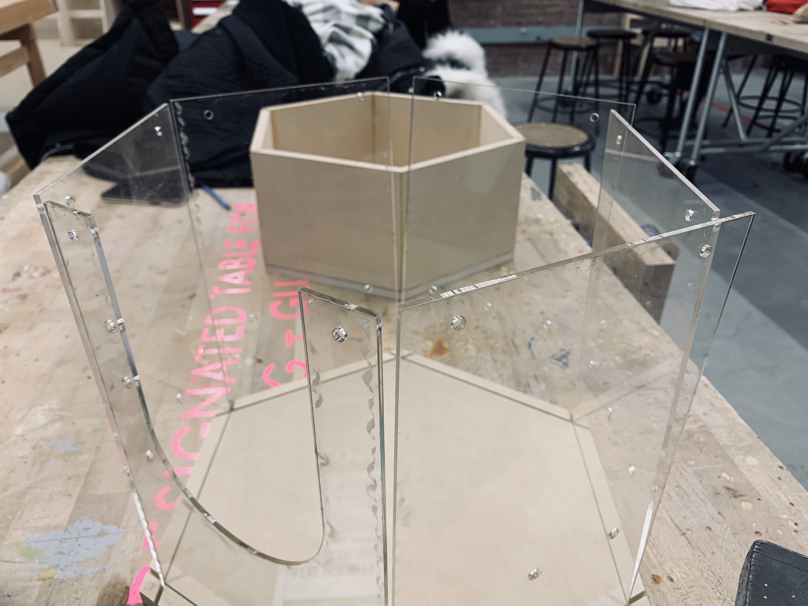
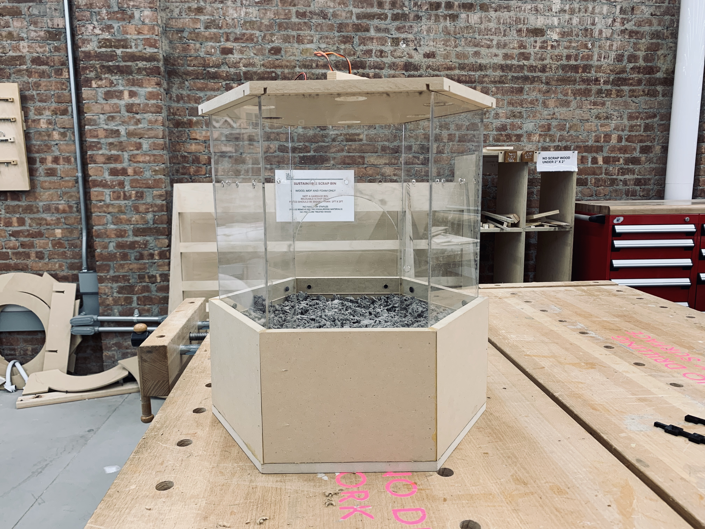
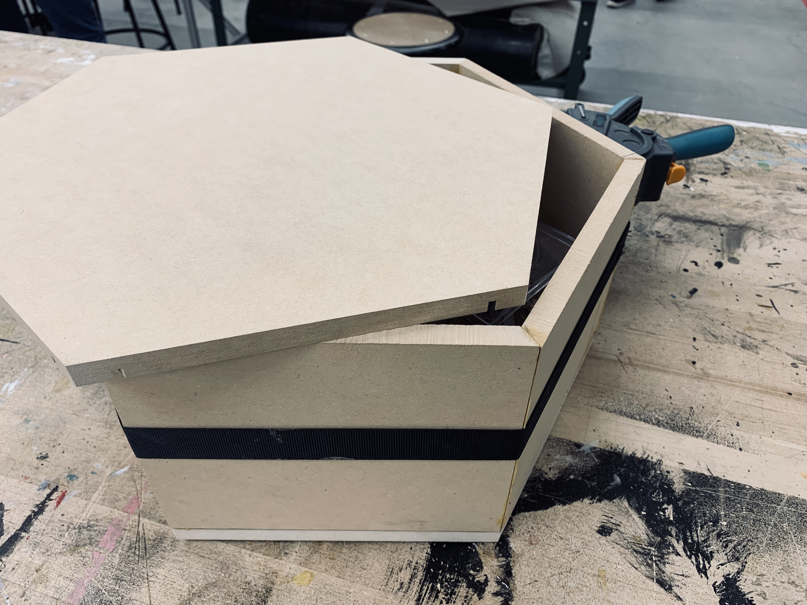
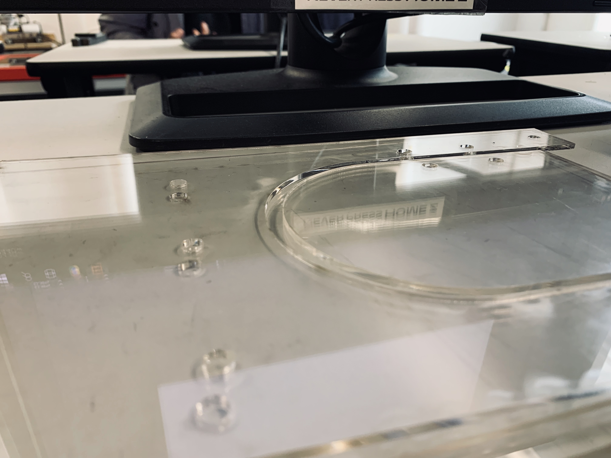
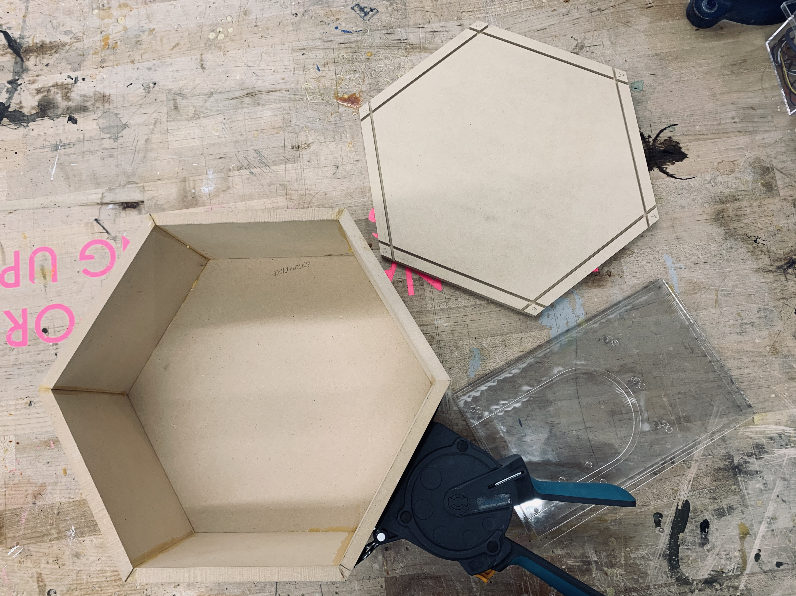
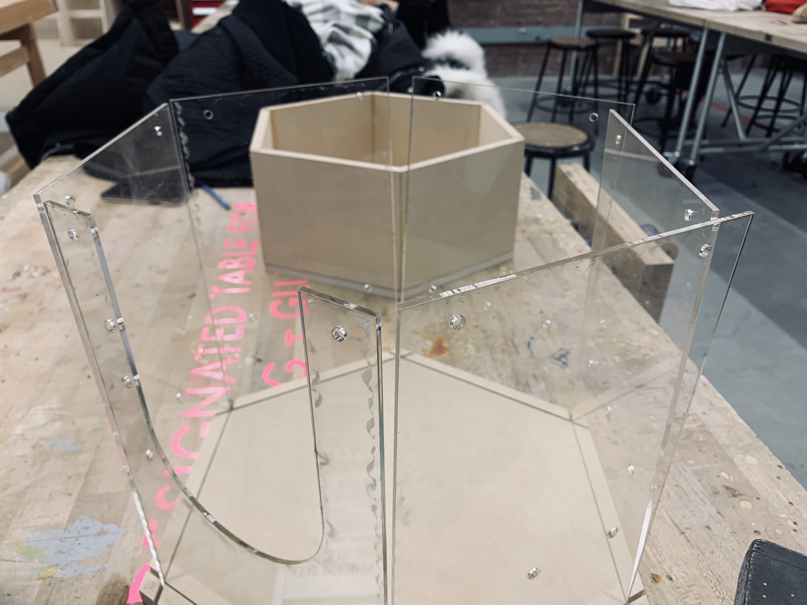
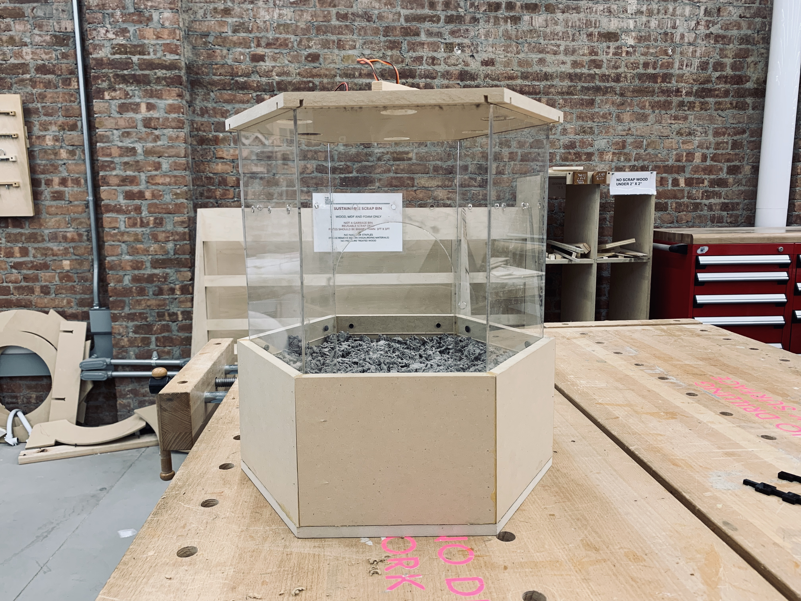

European Rabbit
(Oryctolagus cuniculus):

Inspiring Digging/Burrowing to Evade Predators
The European rabbit, which originated in France and Northwest Africa, is the common ancestor of the various 80+ breeds of domestic rabbits that we have today. While these wild rabbits—having been introduced to most continents except Asia and Antarctica—are now considered pests in many areas such as Australia where they are destroying ecosystems, their population is diminishing in their region of origin (Europe), putting them on the IUCN red list for this area.
Enrichment for Survival Skills (Burrowing via Predator Scent)
European rabbits have a keen sense of smell. With over 50 million receptor cells in their nose (compared to 6 million in humans), they are able to detect the smell of predators nearby with precision. European Rabbits are also known for digging burrows called warrens which are elaborate underground housing systems in the wild. When they sense a predator nearby, they will return to their warren or burrow to hide (unlike Jackrabbits who flee their predators). How can this predator-evading digging pattern be amplified so that more European Rabbits can survive in their region of origin?
Predator Types
The European rabbit has many predators which differ depending on the region. However, some common predators include the red fox, wolves, dingoes (Australia), and badgers. For this design, we will focus on the red fox with the possibility of introducing a variety of predator smells.
Behavior in the Wild
Why Make This?
With the dwindling population in its origin of France and Northern Africa, the European Rabbit needs help in this region. In the UK, for example, over 1.2 million European Rabbits are kept as domestic pets. Perhaps some of these rabbits could be trained to evade predation in the wild and reintroduced into their region of origin to increase the population. Additionally, rabbits who are existing in the wild can be enriched to become even more skilled in evading predators with this device/environment.
Form/Environment
There is a space for the rabbit to dig (8 in depth), and a plexiglass side so that mimics the open air in the natural world. Therefore, in order to feel sufficiently hidden, the rabbit would need to dig down into the ground material. There are 6 holes over which the Arduino with the scent holder will go at random time intervals. There would be tubes that would help focus the smell to one side of the space in our next iteration. Holes are left for breathing, and a door that is loosely attached allows the rabbit to come and go in case of feeling stressed or overwhelmed.
References
https://en.wikipedia.org/wiki/European_rabbit#Predators
http://www.tsusinvasives.org/home/database/oryctolagus-cuniculus
http://www.columbia.edu/itc/cerc/danoff-burg/invasion_bio/inv_spp_summ/Oryctolagus_cuniculus.htm
https://onekindplanet.org/animal/rabbit/
http://agriculture.vic.gov.au/agriculture/pests-diseases-and-weeds/pest-animals/a-z-of-pest-animals/european-rabbit/about-european-rabbit
 









Future Evolution of Form
In it's current form, the device is on the smaller side and could perhaps make the rabbit feel stressed because they cannot get significantly far away from the predator smell. Ideally, it would be a longer, thinner rectangular environment so that the rabbit could go a significant distance to the other end of the environment and dig to evade the predator.
Tubes need to be added on the cieling for scent delivery and a top layer for housing the arduino mechanism needs to be created (as shown in demo video). Also, we are figuring out the best material to use for delivering the predator scent(s). One consideration is fox urine or a foxtail.

Questions
1. What battery is needed to power a servo? The one that comes in Arduino Starter Kit is too weak.
2. Is there a motor that can do 360 degrees? Servo only does 180.